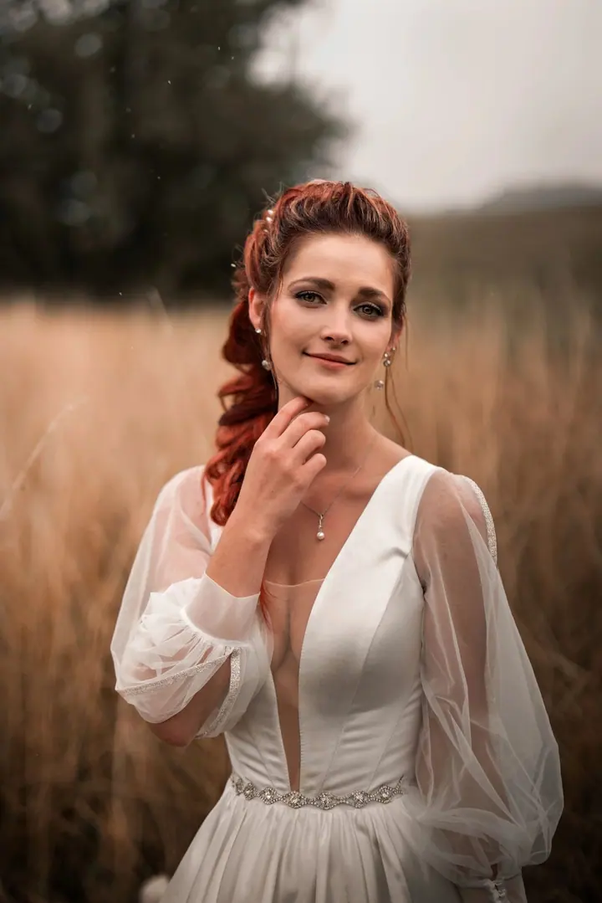
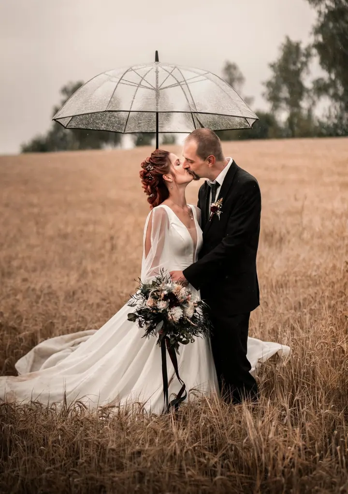
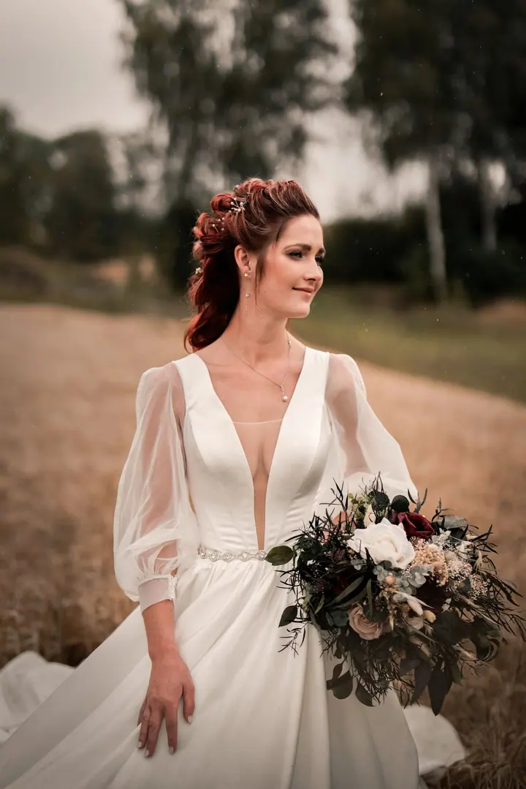

Svatební fotografie
Fotím celý den od ranních příprav až po večerní oslavu. Dostanete 150–300 pečlivě vybraných a upravených fotografií: reportáž, portréty, detaily, párové i skupinové snímky.

Jmenuji se Vít Antoš a prací fotografa si plním svůj vlastní sen. Fotím a natáčím svatby v Královéhradeckém a Libereckém kraji, ve Středních Čechách i jinde po republice…
Rezervovat termínOd malička mě to táhlo k umění, jen jsem dlouho nevěděl, kterou cestou se vydat. Cesta k fotografování nebyla snadná, často se klikatila nebo vedla v kruzích. Přesto jsem tady a můžu o sobě říct: jsem fotograf. Kromě focení také natáčím a tvořím weby.


Fotografie pro mě není jen hromádka jedniček a nul, dávám do ní srdce i duši. Než vás začnu fotit, procházím les a hledám to nejlepší místo. Pak kolem vás chodím a hledám úhel, který ukáže, jací opravdu jste. Váš příběh skládám ze světel, stínů a drobných detailů.
Na svatbách pracujeme jako sehraný tým, dva fotografové a kameraman, takže máte foto i video v jednotném stylu. Máme za sebou tematické a stylizované svatby, fantasy i historické koncepty, noční focení s prskavkami a pro odvážné páry zajistíme i zapůjčení vlků.
Co dělám
Fotím celý den od ranních příprav až po večerní oslavu. Dostanete 150–300 pečlivě vybraných a upravených fotografií: reportáž, portréty, detaily, párové i skupinové snímky.
Moderní svatební film ve 4K s plynulými záběry ze stabilizátoru, podkreslený hudbou podle vašeho výběru. Film má 5–10 minut a na přání ho připravím i v delší verzi.
Focení ve dvou ještě před svatbou, aby váš příběh začal už před velkým dnem. Zároveň se navzájem poznáme a na svatbě se pak před objektivem budete cítit přirozeně.
Záběry z dronu, svatební fotokniha a oznámení na míru. Nově také záběry pro sociální sítě, které máte k dispozici ještě v den svatby.
Postup
Na schůzce před svatbou si projdeme průběh dne, vaše představy i místa, kde budeme fotit.
Rád předem projdu okolí a najdu světlo a zákoutí, která se k vám budou hodit.
S týmem zachytíme celý den od ranních příprav až po večerní oslavu, nenápadně a s přehledem.
Fotky i video upravujeme 2–4 týdny. Každý snímek dostane barevné ladění v jednotném stylu a přirozenou retuš.
Otázky
Obvykle 150–300 pečlivě vybraných a upravených fotografií z celého dne.
Svatební film ve 4K má 5–10 minut. Na přání připravím i prodlouženou verzi.
Úpravy fotek i videa trvají 2–4 týdny. Záběry pro sociální sítě můžete mít ještě v den svatby.
Nejčastěji v Královéhradeckém a Libereckém kraji a ve Středních Čechách, ale rád za vámi přijedu kamkoli po republice.